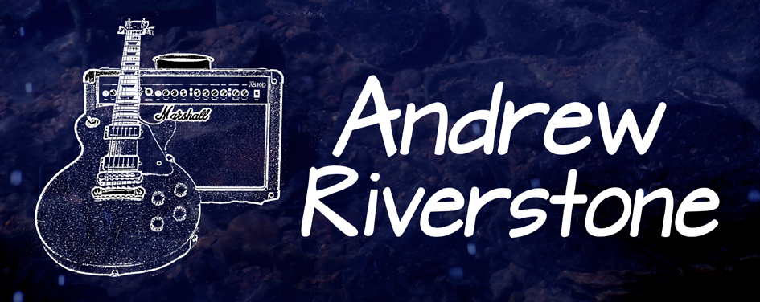

British Blues & Roots Guitarist/Singer/Songwriter
After a stint at art college he packed his guitar and suitcase, moved to London, quickly establishing
Riverstone followed footsteps of his heroes Peter Green and Jimi Hendrix
to perform at iconic London venues
He toured with Irish rock band 'Cast of Thousands' and played on the debut album 'Passion'.
Exploring a love of acoustic music Andrew launched his solo
career with the album 'Discovery'.
Discovery was well received with extensive radio play for the opening track "Emily".
A maturing writing style channelled into follow up album 'Forbidden Fruit',
In the following years Andrew became involved with several electro/acoustic
His solo career refocused with the release of the 'Sunny Monday' album in 2016, returning to a more
A seasoned live performer Andrew honed his skills with regular tours of UK clubs,
Riverstone's latest self-titled album mixes gritty blues riffs with African percussion and soulful vocals.
The album has been very well received with favourable reviews in Blues Matters Magazine UK, Blues Blast USA,
Andrew is currently working on material for a 5th album.
* Neigbours included a brown bear, barbary ape and a family of lions in the town zoo.

Raised on the wild North Devon coast on sounds of Motown, glam rock
and roaring lions*,
Andrew Riverstone taught himself to play guitar
listening to 60s and 70s blues and progressive rock LPs.
himself as a versatile session musician. He recorded with producers Warne Livesey (Julian Cope, The The)
Gus Dudgeon (Elton John, David Bowie, Chris Rea), John Burns (Genesis)
and co-wrote with Busta Jones from Talking Heads, recording at Abbey Road studios.
the Marquee, Goldsmiths College, Hammersmith Palais and Camden Electric Ballroom.
Released on the Fun After All label, a subsidiary of Music for Nations,
the LP sold 25,000 copies in the UK and Europe.
Building from acoustic guitar and vocal tracks
he enhanced the sound with
layers of world percussion and atmospheric instruments.
This led to shows across the UK and many festival performances including three consecutive years
at Glastonbury, where he performed for Spanish national radio and was filmed by MTV.
experimenting with electric and acoustic sounds over spacious drum loops.
group projects, notably jazz/classical Indian fusion band Nada
with saxophonist Tony Roberts, Bristol bands Mellostatics and Jampilot.
traditional roots & blues sound, and recording covers of songs by Bob Dylan, Robert Johnson and Cream.
pubs, art centres and festivals. Making imaginative use of a loop pedal to create a full sound,
he's built a loyal following for dynamic and expressive solo shows.
Live favourite 'Sunny Monday' has been re-recorded in a driving blues/groove style,
alongside a colourful array of new original songs with a harder, dirtier sound,
reflecting the trials and tribulations of life in the early 21st century.
and extensive radio play worldwide. The LP is available via major download and streaming sites,
and CD copies are available to purchase from this website via the shop page.